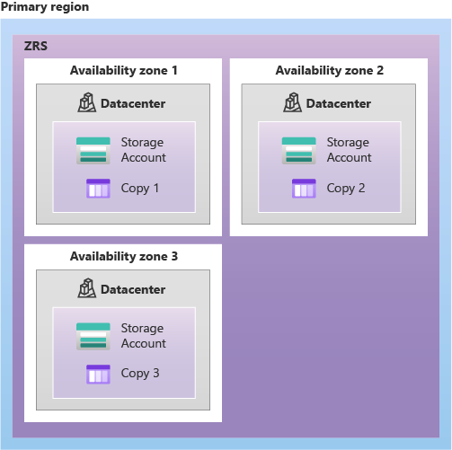

The data in your Azure storage account is always replicated to ensure durability and high availability. Azure Storage replication copies your data to protect from planned and unplanned events. These events range from transient hardware failures, network or power outages, massive natural disasters, and so on. You can choose to replicate your data within the same data center, across zonal data centers within the same region, and even across regions. Replication ensures your storage account meets the Service-Level Agreement (SLA) for Azure Storage even if there are failures.
Locally redundant storage

Locally redundant storage is the lowest-cost replication option and offers the least durability compared to other strategies. If a data center-level disaster occurs, such as fire or flooding, all replicas might be lost or unrecoverable. Despite its limitations, LRS can be appropriate in several scenarios:
- Your application stores data that can be easily reconstructed if data loss occurs.
- Your data is constantly changing like in a live feed, and storing the data isn't essential.
- Your application is restricted to replicating data only within a location due to data governance requirements.
Zone redundant storage

Zone redundant storage synchronously replicates your data across three storage clusters in a single region. Each storage cluster is physically separated from the others and resides in its own availability zone. Each availability zone, and the ZRS cluster within it, is autonomous, and has separate utilities and networking capabilities. Storing your data in a ZRS account ensures you can access and manage your data if a zone becomes unavailable. ZRS provides excellent performance and low latency.
- ZRS isn't currently available in all regions.
- Changing to ZRS from another data replication option requires the physical data movement from a single storage stamp to multiple stamps within a region.
Geo-redundant storage

Geo-redundant storage replicates your data to a secondary region (hundreds of miles away from the primary location of the source data). GRS provides a higher level of durability even during a regional outage. GRS is designed to provide at least 99.99999999999999% (16 9's) durability . When your storage account has GRS enabled, your data is durable even when there's a complete regional outage or a disaster where the primary region isn't recoverable.
If you implement GRS, you have two related options to choose from:
-
GRS replicates your data to another data center in a secondary region. The data is available to be read only if Microsoft initiates a failover from the primary to secondary region.
-
Read-access geo-redundant storage (RA-GRS) is based on GRS. RA-GRS replicates your data to another data center in a secondary region, and also provides you with the option to read from the secondary region. With RA-GRS, you can read from the secondary region regardless of whether Microsoft initiates a failover from the primary to the secondary.
For a storage account with GRS or RA-GRS enabled, all data is first replicated with locally redundant storage. An update is first committed to the primary location and replicated by using LRS. The update is then replicated asynchronously to the secondary region by using GRS. Data in the secondary region uses LRS. Both the primary and secondary regions manage replicas across separate fault domains and upgrade domains within a storage scale unit. The storage scale unit is the basic replication unit within the datacenter. Replication at this level is provided by LRS.
Geo-zone redundant storage

Geo-zone-redundant storage combines the high availability of zone-redundant storage with protection from regional outages as provided by geo-redundant storage. Data in a GZRS storage account is replicated across three Azure availability zones in the primary region, and also replicated to a secondary geographic region for protection from regional disasters. Each Azure region is paired with another region within the same geography, together making a regional pair.
With a GZRS storage account, you can continue to read and write data if an availability zone becomes unavailable or is unrecoverable. Additionally, your data is also durable during a complete regional outage or during a disaster in which the primary region isn't recoverable. GZRS is designed to provide at least 99.99999999999999% (16 9's) durability of objects over a given year. GZRS also offers the same scalability targets as LRS, ZRS, GRS, or RA-GRS. You can optionally enable read access to data in the secondary region with read-access geo-zone-redundant storage (RA-GZRS).
Tip
Microsoft recommends using GZRS for applications that require consistency, durability, high availability, excellent performance, and resilience for disaster recovery. Enable RA-GZRS for read access to a secondary region when there's a regional disaster.
Things to consider when choosing replication strategies
Let's examine the scope of durability and availability for the different replication strategies. The following table describes several key factors during the replication process, including node unavailability within a data center, and whether the entire data center (zonal or nonzonal) becomes unavailable. The table identifies read access to data in a remote, geo-replicated region during region-wide unavailability, and the supported Azure storage account types.
| Node in data center unavailable | Entire data center unavailable | Region-wide outage | Read access during region-wide outage |
|---|---|---|---|
|
-
LRS
- ZRS - GRS - RA-GRS - GZRS - RA-GZRS |
-
ZRS
- GRS - RA-GRS - GZRS - RA-GZRS |
-
GRS
- RA-GRS - GZRS - RA-GZRS |
-
RA-GRS
- RA-GZRS |
Tip
Extend your learning with the Make your application storage highly available with read-access geo-redundant storage training module. This module has a sandbox where you can practice.